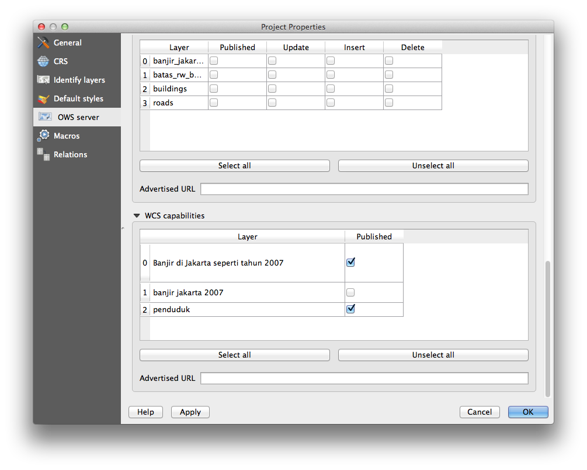
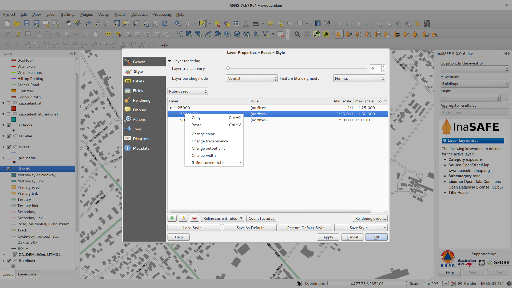

Changelog for QGIS 2.2¶
Change log for the next release of QGIS 2.2.0. The emphasis on this release has been very much on polish and performance - we have added many new features, tweaks and enhancements to make the user interface more consistent and professional looking (and hopefully easier to use). The composer (used for creating print ready maps) has had a lot of work done to it to make it a more viable platform for creating great cartographic outputs.
Whenever new features are added to software they introduce the possibility of new bugs - if you encounter any problems with this release, please file a ticket on the QGIS Bug Tracker.
We would like to thank the developers, documenters, testers and all the many folks out there who volunteer their time and effort (or fund people to do so).
From the QGIS community we hope you enjoy this release! If you wish to donate time, money or otherwise get involved in making QGIS more awesome, please wander along to qgis.org and lend a hand!
Finally we would like to thank our official sponsors for the invaluable financial support they provide to this project:
- GOLD Sponsor: Asia Air Survey, Japan
- SILVER Sponsor: G.A.I.A. mbH, Germany
- SILVER Sponsor: State of Vorarlberg, Austria
- BRONZE Sponsor: www.molitec.it, Italy
- BRONZE Sponsor: www.argusoft.de, Germany
A current list of donors who have made financial contributions large and small to the project can be seen on our donors list.
If you would like to make a donation or sponsor our project, please visit our sponsorship page for details. QGIS is Free software and you are under no obligation to do so. Sponsoring QGIS helps us to fund our six monthly developer meetings, maintain project infrastructure and fund bug fixing efforts.
- Application and Project Options
- Data Providers
- Digitising
- General
- Map Composer
- Feature: Zebra map border improvements
- Feature: Element rotation support
- Feature: Composer scale added and ruler improvements
- Feature: World file generation
- Feature: Working with multiple items
- Feature: Atlas enhancements
- Feature: Improved item selection
- Feature: Better navigation of compositions
- Feature: Improved styling of pages and shapes
- QGIS Server
- Symbology
- Feature: Gradient fill support
- Feature: Label support for palleted rasters
- Feature: Colour ramps can be inverted
- Feature: Copy and Paste in Rule based renderer
- Feature: On the fly feature generalisation
- Feature: Anchor points can be set for marker layers
- Feature: Thematic maps based on expressions
- Feature: Expression support in symbol diagrams for size and attributes
- Feature: Else rule in rule based renderer
- Feature: Inner stroke support for polygons
- User Interface
Application and Project Options¶
Feature: Support for measurement in Nautical Miles¶
For you seafaring folks out there, you can now measure distances using
nautical miles. To enable this, use the
Settings -> Options -> Map Tools option panel.

Data Providers¶
Feature: One to many relations support¶
This release sports the ability to define 1:n relations. The relations are defined in the project properties dialog. Once relations exist for a layer, a new user interface element in the form view (e.g. when identifying a feature and opening its form) will list the related entities. This provides a powerful way to express e.g. the inspection history on a length of pipeline or road segment. You can find out more about relations support here.


Feature: Paste as new vector layer¶
It is a common activity in a GIS to create a sub-selection and then to
create a new layer from the selection. In QGIS you can already do
save selection as to save a layer from your selection, and now
offers functionality that allows you to create a new file or memory
layer from whatever is in your clipboard. Simply select some features,
copy them to your clipboard and then do Edit -> Paste features as
and choose either New vector layer or New memory layer from the
submenu. The best part of this new feature is that if you have some Well
Known Text (WKT) features in your clipboard from another app, you can
simply paste them into QGIS as a new layer now.

Feature: WMS legend graphic in table of contents and composer¶
Prior to QGIS 2.2 the WMS data provider was not able to display a legend in the table of contents‹ layer list. Similarly no legend could be displayed in the map composer. QGIS 2.2 addresses both of these issues.
Clicking on the layer’s legend will open a frame with the legend at full resolution. The legend will display contextual information based on your current scale. The WMS legend will be shown only if the WMS server has GetLegendGraphic capability. Legend resolution can be modified changing Canvas & Legend options.

Digitising¶
Feature: Fill ring digitizing tool¶
This new tool is used to cut holes in polygons and automatically fill
them with new features. If you hold down Ctrl when finalising the
feature, the attributes will be taken from parent feature.

General¶
Feature: Recent expressions saved¶
The expression builder will now remember the last 20 used expressions.

Feature: Paste WKT from clipboard¶
QGIS can now paste and create a new feature based on WKT that is found
in the clipboard. Simply copy some WKT and paste into a editable layer.
You can also create a new layer by selecting
Edit -> Paste As -> New Memory Layer
Map Composer¶
Feature: Zebra map border improvements¶
You can now set the colours of the Zebra border on the map element
in the map composer.

Feature: Element rotation support¶
Every type of element in the composer can now be rotated, including scale bars, tables and legends. For example you can rotate a label on the composition so that it fits into your page layout better (as illustrated). Resizing of rotated elements has also been improved.

Feature: Composer scale added and ruler improvements¶
The appearance of rulers has been improved by adjusting the scale logic
and by adding smaller ruler divisions, and by making vertical rulers use
rotated text. There is also a new composer action for hiding/showing
rulers. You can now quickly zoom to 100% page scale using the new
Zoom to 100% tool on the toolbar. The composer window now lets you
quickly switch the page scaling via a new scale combobox in the status
bar. In addition a new indicator has been added to show you the precise
pixel position of your cursor. The Close and Help buttons have
been removed from the bottom of the composer window to give you the
maximum amount of screen space for working with your compositions.

Feature: World file generation¶
In the composer you can now create georefenced maps! Simply ensure that
you choose the correct map element in the Composition tab and then
export your map as a PNG file. An accompanying world file will be
written, allowing you to load your exported composition in QGIS as a
raster layer.

Feature: Working with multiple items¶
Support has been added for moving and resizing multiple items simultaneously. You can now hold shift while resizing to maintain an item’s ratio while resizing, or hold control to resize from the item’s centre. Shortcut key also apply to moving items, so holding shift while moving an item constrains the movement to horizontal or vertical movement, and holding control temporarily disables item snapping. You can also hold shift while pressing a cursor key to shift all selected items by a larger amount.
Feature: Atlas enhancements¶
You can now preview the individual pages of the map atlas that will be generated in composer. While in atlas preview mode you can output the current page without outputting the entire atlas. You can also tweak the map extent or scale for each feature while previewing the atlas page. Atlas map settings have been moved from the atlas panel to the map properties panel, so now more than one map can be controlled by the atlas generation. There’s a new option to automatically centre an overview map, which comes in handy when creating atlas based maps. More context information is now available so that you can adjust your symbology based on whether the feature is the current atlas feature or not. See this article for more info.

Feature: Improved item selection¶
You can now select more then one item by clicking and dragging a box to select them, and there’s shortcuts for adding to a selection (holding shift while dragging), subtracting from a selection (hold control while dragging) and switching to »within« selection mode (hold alt while dragging). Shift clicking an already selected item will remove it from the selection. There’s also shortcuts and menu items for selecting all items, clearing a selection, and inverting a selection. It’s also possible now to select items which are hidden below other items by control-clicking an item, or by using »Select next item above/below« in the new composer Edit menu.
Feature: Improved styling of pages and shapes¶
You can now control the style of the composition background using the full range of QGIS‹ symbology options. It’s now possible to export compositions with a transparent (or semi-transparent) background. Shape items (rectangles, triangles and ellipses) can also be styled using the same options as polygon map layers. You can even style the page background or shapes by using data defined settings based on the current atlas feature! There’s also a new option for rounding the corners of rectangle shapes.
QGIS Server¶
Feature: WCS Support added to QGIS Server¶
QGIS-Server already supports standards : Web Map Service (WMS version 1.3.0 and 1.1.1) and Web Feature Service (WFS version 1.0.0) and Web Feature Service with Transaction (WFS-T). With this new release of QGIS, you can now serve raster layers using the Web Coverage Service (WCS version 1.0.0)) standard.

Symbology¶
Feature: Gradient fill support¶
The new gradient fill feature lets you create even better cartography than ever before. The feature has numerous options providing for great flexibility in how you apply gradients to your features. These include:
- Two colour or ramp based fills
- Canvas or object based origin for your gradients
- Gradients originating from the centroid of a feature
- Conical, linear and radial gradient types
- Data defined options (to use an expression or a table column) for all gradient properties.
Read more about how to use gradient fills here.

Feature: Label support for palleted rasters¶
Rasters that use a fixed colour pallette (typical for e.g. a land cover map) can now have category labels assigned which will be shown in the map legend and in the composer legend.

Feature: Colour ramps can be inverted¶
A new option has been added to symbology dialogs that deal with colour ramps to allow you to invert the colour ramp when it is created.

Feature: Copy and Paste in Rule based renderer¶
In the rule based renderer, you can now right click on a rule and then copy and paste the rule as a new rule.

Feature: On the fly feature generalisation¶
QGIS 2.2 introduces support for on the fly feature generalisation. This can improve rendering times when drawing many complex features at small scales. This feature can be enabled or disabled in the layer settings. There is also a new global setting that enables generalisation by default for newly added layers. Note: Feature generalisation may introduce artefacts into your rendered output in some cases. These may include slivers between polygons and inaccurate rendering when using offset based symbol layers.

Feature: Anchor points can be set for marker layers¶
When defining symbology with marker layers (e.g. a point layer
symbolized with SVG markers) you can now specify what part of the image
should correspond to the ›anchor point‹. For example you can indicate
that the bottom-left corner of the image should coincide with the
position of the feature. You can also use the
data defined properties to have this property set at render time
based on an attribute in the data table for that layer (or an arbitrary
expression).

Feature: Thematic maps based on expressions¶
Categorized and Graduated thematic maps can now be created using the result of an expression. In the properties dialog for vector layers the attribute chooser has been augmented with an expression builder. So now you no longer need to write the classification attribute to a new column in your attribute table if you want the classification attribute to be a composite of multiple fields, or a formula of some sort.

Feature: Expression support in symbol diagrams for size and attributes¶
You can now use an expression to define the size and attributes when using the diagramming capabilities of QGIS. For more info see the Pull Request here Pull 1039

Feature: Else rule in rule based renderer¶
The Rule based renderer now supports a ELSE rule that will be run if none of the other rules on that level match. Else rules can be nested just like any other rules.
An example might be:
type = 'water' (style grey)ELSE (style red)
Feature: Inner stroke support for polygons¶
Support has been added for polygon strokes to be limited to the interior of the polygon (so that it does not overflow into a neighbouring polygon).
More information on this feature can be found on the second part of this article.

User Interface¶
Feature: Improved properties dialogs¶
All our properties dialogs have had their main property menus updated so they look slicker with a inverse coloured side bar. This is purely cosmetic but should make it easier to know what your current context is in a dialog.

Feature: Expression dialog improvements¶
We have made some tweaks to the expression dialog - power users can now hide the operator buttons. There are also now splitters between the function list and function help areas, and between the expression and function list area. See the original pull request for details.

Feature: New keybindings¶
We have updated the keyboard shortcuts in QGIS to make it more efficient to carry out repetitive tasks.
ctrl-d- Remove selected layers in table of contents>- Select next vertex when using the node tool<- Select previous vertex when using the node toolDeleteorBackspace- delete the selected features (you can undo these actions), or a node when using the nodetool.F5updates the canvas (instead of ctrl-r)
See also Issue 9094 and Pull Request 1010 for more details.